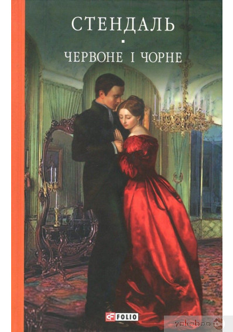
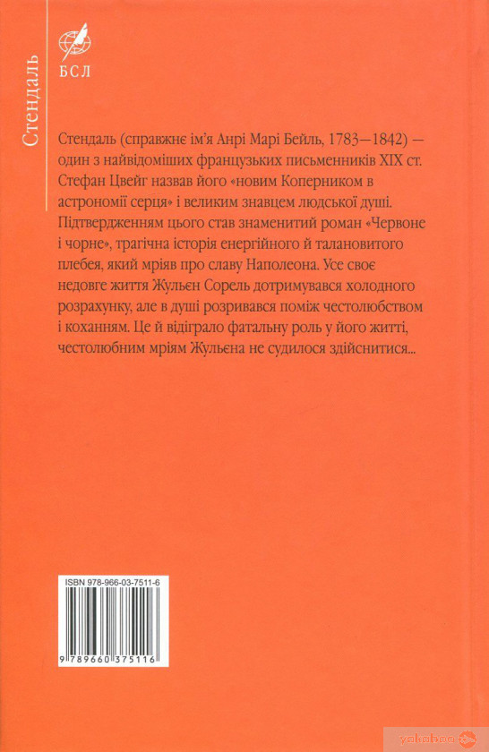

«Майстер і Марґарита»


Роман "Червоне і чорне"
Роман "Червоне і чорне" є одним з найкращих творів відомого французського письменника Стендаля (1783-1842). Його герой Жульєн Сорель - увійшов у світову літературу як уособлення непокірливої, волелюбної юності. Сорель вступив у самостійне життя після падіння Наполеона, у період Реставрації Бурбонів. При Наполеоні обдарований юнак, можливо, зробив би військову кар'єру. Але за свого часу єдину можливість просунутися в суспільсьві він вбачав у тому, щоб, закінчивши духовну семінарію, стати священиком. У душі Сореля сперечаються дурні нахили і людяність, холодний розрахунок і романтична чутливість. Любовна інтрига і честолюбні мрії приводять його на гільйотину.